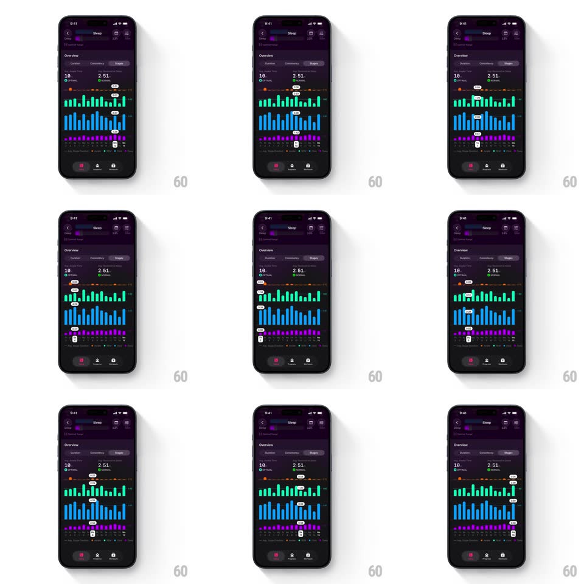

Media
Frame-by-frame

Rebuild this interaction 1:1: The Outsiders' sleep stages graph - a three-tier bar chart (green, blue, purple rows for the stages) where scrubbing snaps a tooltip across all tiers at once, reading each stage's value for the selected day.

Rebuild this interaction 1:1: The Outsiders' sleep stages graph - a three-tier bar chart (green, blue, purple rows for the stages) where scrubbing snaps a tooltip across all tiers at once, reading each stage's value for the selected day. ## Integration Integration: stack-agnostic spec - springs given as stiffness/damping, timed motions as duration + curve; map every value to your framework and animation library of choice. ## Scene Dark purple Sleep screen, Stages tab: stats "10" and "2:51", three stacked rows of vertical bars - teal-green (top), blue (middle), purple (bottom) - sharing one x-axis of days, with thin threshold markers above the top tier, and the bottom tab bar. Scrub state: a vertical selection line across all three tiers with a tooltip pill per tier showing that day's value. ## Motion spec Pattern: multi-tier snapping scrub, gesture-driven. - Scrub: dragging moves the selection 1:1; crossing each day's midpoint snaps the selection line to that day (spring ~420/22) with haptic. - Tooltips: one pill per tier rides the selection, each updating its value for the snapped day (100ms fade per change); pills sit just above their tier. - Highlight: the selected day's bars brighten in all three tiers simultaneously (120ms). - Threshold: the marker line above the top tier stays fixed as reference. ## Calibration - All tiers snap to the same day together - no per-tier drift. - Pills stagger vertically so they never collide on tall bars. ## Reduced motion Tap selects a day; pills appear without snap animation (150ms). ## Don't miss - The selection line spans the full chart height, cutting through all three tiers. - Each tier keeps its own color when highlighted - brightened, not recolored.